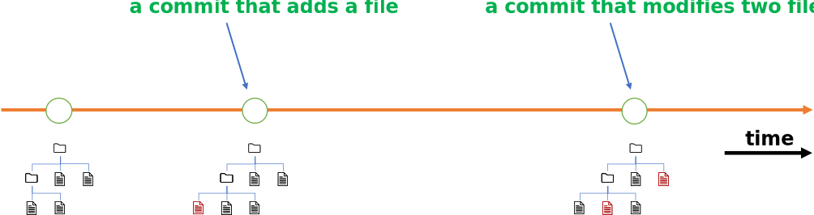

Understanding Git
Having seen how various use cases can be accommodated by workflows that leverage the Git ecosystem for managing code and data, it is important to gain a better understanding of Git itself. Instead of diving into Git’s many features, which can be confusing, let’s take a step back to gain an overview.
{kind=link}
In essence, Git allows you to tightly manage the evolution of trees of files. Each new tree version resulting from changes to a tree (a commit) is stored by Git in a repository in unmodifiable and retrievable form, with a unique identifier.1 This unique identifier is a so-called commit hash2 that is obtained by applying a cryptographic hash function to:
The file changes
The parent commit hash
The commit message
The commit author
The committer (not necessarily the same as the author)
The date + time
None of these can change without invalidating the commit hash. This also holds for the parent of the parent, all the way back to an empty initial repository: the hash fixes the whole history of changes and hence also the state of the file tree at the time of the commit. The same hash cannot3 result from the same file tree but with a different sequence of changes leading up to it. It cannot result from different authors making the very same changes, or the same authors committing the very same changes at a different time or with a different descriptive message.
You can therefore think of a Git repository as a store that preserves the content, provenance, and retrievability of the entire history of a tree of files while giving tight control over changes. This is essential because copying and changing information has become so cheap and easy that files tend start to lead a life of their own: being copied at will, modified ad hoc, with ownership and responsibility soon lost.
This does not mean that Git makes it difficult to copy and change information. Quite the reverse. Git embraces the convenience of easily making copies and applying changes for many purposes, yet gives you the tools to nevertheless keep track of change and consolidate significant changes in a repository. As a result, the validated/canonical/official/upstream copy of a file tree can be maintained in a well-managed manner inside a repository even when a storm of copying, revision, development, and experimentation is going on.
That, in a nutshell, is the power of Git.
Warning
Git does not manage code and data for you, it helps you manage. You will need to tell Git what is important and should be tracked, and what can be ignored. You will need to describe why you made a change so that Git can keep a record. You will need an overview of your code or dataset and a goal for its evolution. It is perfectly possible to use Git and still make a mess.
In short, Git is stupid, it needs your insight and intelligence.
- 1
Since a commit involves a set of changes to a particular prior version of the file tree, Git can show you the changes and also return the updated file tree given a commit identifier: you can therefore validly conceptualize a commit both as a change set and as a tree version.
- 2
Commit hash values are represented by Git as large hexadecimal numbers with hexadecimal digits encoded by the characters
0123456789abcdef. In the output of Git commands you will therefore see commits identified by strings such asb773c1eb0b1cc59febce35c9b92d2a8ca3cb7e89. You can use these as input to Git commands that operate on specific commits.- 3
Hash functions can produce hash collisions: yielding the same hash value with different input data. But Git uses the SHA-1 and stronger SHA-256 cryptographic hash functions which have been constructed such that the probability of a hash collision is extremely tiny, so that one can safely assume that hash values are unique for a given input.